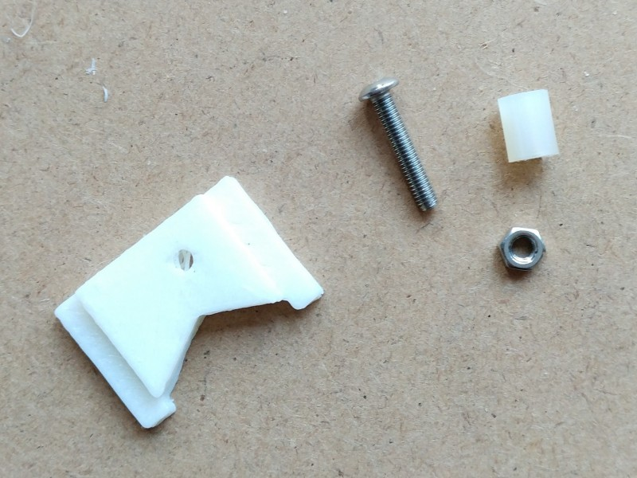

Z轴组装
零件列表
| 项目 | 数量 |
| 亚克力Z平台板 | 1 |
| 亚克力Z打印台 | 1 |
| 亚克力Z支撑脚 | 2 |
| Z上固定件（打印件） | 1 |
| Z下固定件（打印件） | 1 |
| Z升降件（打印件） | 1 |
| Z触碰件（打印件） | 1 |
| 滑动轴承（长） | 4 |
| 290mm光杆 | 2 |
| 230mm丝杆 | 1 |
| 塑料扎带 | 4 |
| 塑料扎带（细） | 1 |
| Z升降件弹簧 | 1 |
| M3*8 | 4 |
| M3*15 (含螺母) | 7 |
| M5*40 (配4螺母，共16个) | 4 |
| M3尼龙柱10mm | 1 |
| M6螺母 | 2 |
| Z触碰开关带线 | 1 |
| 电机 | 1 |
| 连轴器 | 1 |

安装升降系统
准备好Z升降件，1根丝杆，2个M6螺母，Z升降系统有消间隙设计，所以还需要一个弹簧，如图所示：
按次序在丝杆上置入M6螺母，升降件，弹簧，M6螺母
用手将丝杆压向打印件，让上面的M6螺母陷入打印件
在按紧弹簧的同时，把下方的M6螺母转向打印件
松开手后，让下方的螺母也陷入打印件中，一个消间隙功能的升降系统就完工了。
安装Z支持脚
下面安装Z支持脚，准备好2个亚克力支持脚，4个滑动轴承，4个塑料扎带
用塑料扎带把轴承捆到亚克力支撑脚上，参考图例
减去多余的扎带

把支撑脚安装到升降件上，注意轴承朝外。
安装触碰件
准备好M3*15螺栓（含螺母），一个触碰打印件，一个尼龙柱。

把下图所示组装触碰件，把螺母从侧面置入后让M3螺栓通过打印件的孔，然后装上尼龙柱，通过旋转尼龙柱可以调节触碰距离
安装上下固定件
准备好Z上固定件和下固定件，用4个M3螺栓把电机固定到下固定件上，同时把z联轴器固定到电机轴上

把两个Z轴光杆穿过Z平台滑动轴承后固定到上固定件上。
然后，用两个M3*15(含螺母)把光杆固定到下固定件上，注意左右一致，固定住联轴器和丝杆。
接着安装上固定件触碰开关，准备好Z触碰开关，细扎带
用细扎带把Z触碰开关安装到上固定件内，然后减去多余的扎带
把触碰件放入Z升降件的触碰位内。

安装Z支撑平台
准备好4个M3*15螺栓（含螺母），亚克力Z平台板
用M3*15螺栓和M3螺母把Z平台板固定到支撑脚上
这是一个完整的Z轴系统，通过控制电机的转动带动丝杆旋转来升降打印平台，通过触碰件和触碰开关的触碰来检查平台是否归位。